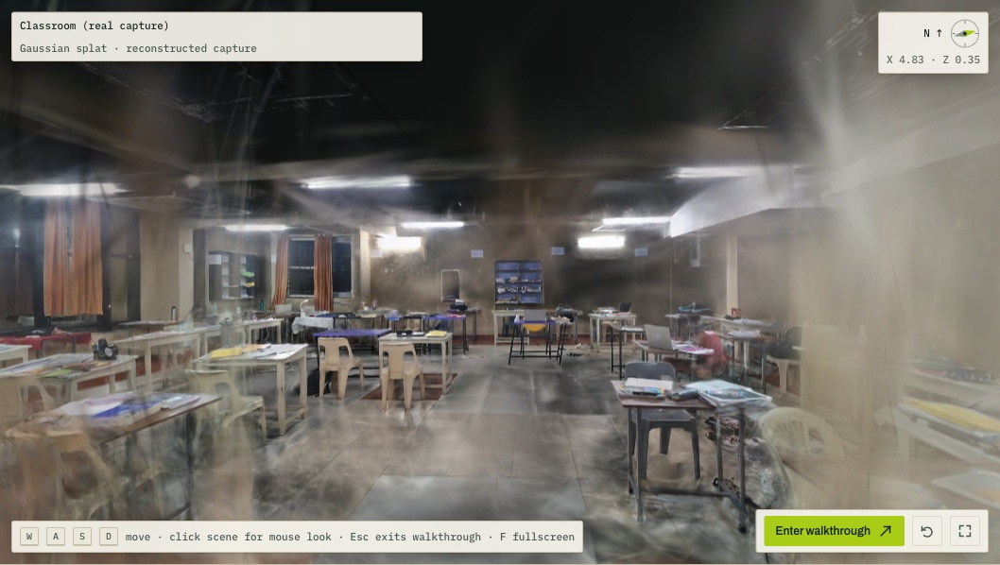
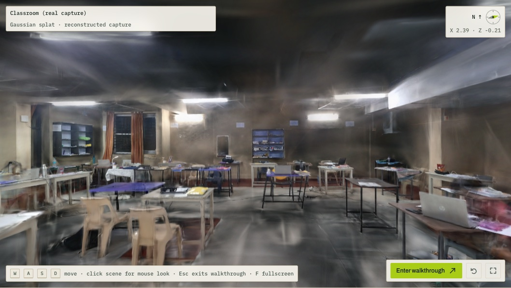

Imagine arriving at a large store, an exhibition hall or a festival venue for the first time. A floor plan tells you where the rooms are, but not what they look like, where the entrance you want actually is, or whether the stall you are looking for is behind that pillar. Photo tours show what a place looks like but cannot be explored freely. What a visitor really wants is to walk the space before they arrive.
Our answer is a photorealistic digital twin that a non-expert can create with a phone and that anyone can explore in a browser. Round 1 delivers the core loop: capture a space, reconstruct it faithfully and roam it freely. We designed the capture procedure and the automated checks so that quality comes from following the process, not from manual 3D modelling. The same web app already contains groundwork for the later rounds: place search and shortest-path routing over the walkable grid for Round 2, and phone pairing for on-site capture in Round 3.
We split the system into an offline reconstruction pipeline and a static web side. Reconstruction needs a GPU and takes hours, so it runs once per capture on one workstation. Viewing must be instant and work on any device, so the web side has no server code: the app and each scene are plain files on a static host. A scene travels as a self-contained bundle: a manifest, the compressed splat, the walkable grid, named places and a quality report. Publishing a new space is therefore a matter of adding one folder.
Hardware. Only one step needs an NVIDIA GPU: COLMAP's feature extraction and matching, for which we use its CUDA build. COLMAP can also run these steps on the CPU, more slowly. Brush trains through WebGPU, so training runs on any recent GPU. We built the live classroom on an RTX 5060 laptop. Viewing needs only a browser with WebGL2.
Reconstruction quality is decided at capture time. A blurred or badly lit video cannot be repaired later, so we wrote the procedure around the assumptions the algorithms make: one unchanging camera, a static scene, and every surface seen many times from different positions. Each rule protects one of those assumptions.
| Rule | Why it matters |
|---|---|
| Fix the camera: lock exposure and focus, use the 1x lens without zoom, turn stabilisation and HDR off, change nothing mid-clip | Structure-from-motion models one camera with fixed optics. Zoom, digital stabilisation and focus hunting quietly change that camera and bend straight walls. Changing brightness confuses feature matching and bakes flicker into the model's colours. |
| Move slowly: about 0.5 m/s, pan no faster than about 20° per second, never spin in place | Motion blur is the most common reason a reconstruction fails. At our default sampling of 3 frames per second, this pace puts frames about 17 cm apart: dense overlap with little blur. |
| Cover everything twice: walk the perimeter facing slightly into the wall, make two passes through the middle, pan slowly at corners, arc around large furniture, cross doorways both ways and finish where you started | Each surface must appear in at least three frames from different positions to be placed accurately and coloured correctly from every angle. Returning to the start closes the loop so drift can be corrected, and two-way doorway crossings keep adjoining rooms connected. |
| Light it evenly: all lights on, curtains open, no direct sun beams and no flash | Consistent lighting gives consistent colour across views. Blown highlights and moving flash shadows end up permanently painted into the model. |
| Avoid what cannot be reconstructed: mirrors, glass, windows, plain white walls; keep people out of shot where possible | Reflections and transparency break the static-scene assumption and leave floating artefacts. Blank walls give the feature matcher nothing to hold, so we keep edges, switches or posters in frame. People who do walk through are masked out by the pipeline. |
| Film long enough: at least 31 s per room, ideally 60 to 180 s, landscape, 1080p or 4K at 30 fps | We need at least 80 sharp frames. At 3 frames per second, 31 s yields 93 frames, and discarding the blurriest 15 % leaves exactly 80. The pipeline applies this rule to the clip's real length before doing any work. |
Right after the camera poses are solved, the pipeline maps which parts of the room were seen and writes a re-film list, such as "stand here, face the ceiling", while the phone is still at hand.
We built the pipeline to fail early and loudly rather than produce a poor model quietly. Each stage checks its own output, a run moves forward only when the checks pass, and finished stages are kept so a failed run resumes where it stopped.
Frames. We sample the video at 3 frames per second by default and keep the full 1080p width (1,920 pixels). OpenCV scores each frame's sharpness with the variance of its Laplacian and we discard the blurriest 15 %. A fixed share adapts to each video's overall sharpness, so no threshold needs tuning. Validation applies the same frame rule to the clip before any work starts.
Camera poses and coverage. COLMAP finds SIFT features, matches neighbouring frames and solves for every camera position and a sparse point cloud, treating the clip as one camera with fixed optics. If too few frames are placed, the pipeline retries with exhaustive matching, which our classroom needed. A run continues only if at least 60 % of frames are placed and the point cloud is dense enough; below 90 % it warns, and 90 % is our bar for publishing. A coverage map from the same points reports unseen parts of the room.
People masking. A YOLOv8 segmentation model finds people in every frame. We widen each mask by 45 pixels and tell Brush to ignore those pixels during training, so passers-by leave no ghosts while the furniture behind them is still learned from other frames.
Training and cleanup. Brush trains a Gaussian Splatting model for 30,000 steps with light regularisation and a cap of 1.5 million splats, which removed the floating fog of our first run. A trained model is reused only if the trainer, step count and camera solution are unchanged, and the dataset is checked so Brush cannot silently train on fewer views. Cleanup then shortens needle-shaped splats, drops nearly transparent ones, and removes splats outside the room or on the path the phone travelled, where nothing solid can be.
Compression. A raw room splat runs to hundreds of megabytes. We convert it to the SOG format with splat-transform against a 50 MB budget, first dropping higher-order colour detail and then thinning splats only if needed, with fallbacks to CPU encoding and the SPZ format. The full-quality file stays on the workstation as the master copy.
Scene bundle and sign-off. COLMAP's units are arbitrary, so the pipeline levels the floor from the camera poses and estimates metric scale by assuming the phone was held 1.45 m above the floor, recorded in the bundle as an estimate. It writes a 10 cm walkable grid: cells with points between knee and head height are blocked with 25 cm clearance, cells the camera walked through are always free, and cells more than 0.75 m from the filmed path are closed off because the splat is unreliable there. The start point is a real camera position. A person then walks the scene and approves it with a note; automated checks prove a file is well formed, but whether it looks right is a human judgement.
We render Gaussian splats rather than a textured mesh because splats reproduce what makes a room look real: soft lighting, glossy surfaces that change with viewpoint, and thin or cluttered objects that photogrammetry meshes blur or break. The cost is that a splat has no surface for collision, which our walkable grid supplies.
The web app is built with React and the PlayCanvas engine, which renders SOG splats natively. Visitors click Enter walkthrough, look around with the mouse and walk with W, A, S and D or the arrow keys; F toggles full screen and Escape releases the mouse. Movement slides along walls and desks instead of passing through them. Because a splat streaks when seen from directions nobody filmed, the viewer limits looking up or down to 35° and eases the view back toward filmed directions. A search box finds named places and the app can plot a route to them over the same grid.
Loading. The app checks each splat's SHA-256 digest against the scene manifest, hands the verified bytes straight to the renderer so the file is downloaded only once, retries once if the connection drops, and explains any failure in plain language. The app and its scene bundles are served as static files from Vercel, with a GitHub Pages mirror.
The live site opens on a classroom we filmed in one 180-second, 1080p take. The table gives the run behind it, as recorded in our run logs, and our measurements of the deployed viewer.
| Metric | Value | Metric | Value |
|---|---|---|---|
| Frames used | 918, sampled at 6 per second | Splats in the published model | 1,457,345 |
| COLMAP registration | 895 of 918 frames (97.5 %), 0.90 px reprojection error | Published file | 23.1 MB, SOG |
| Processing time | COLMAP 4.2 h with exhaustive matching; training 7.9 h on a thermally throttled RTX 5060 laptop | Room size (estimated scale) | about 12.0 × 12.2 m, 2.7 m high |
| Load time, desktop (measured) | 5.7 to 9.9 s to a walkable scene, three fresh sessions, Chrome on an Apple M1 laptop over home broadband | Frame rate (measured) | 24 to 41 fps, same laptop, 1440 × 900 window |


Our first run on the same video, at 2 frames per second, placed 287 of 306 frames (94 %) and trained in 40 minutes on the same laptop. The denser 6 fps run is cleaner near the start point. Phone load times were not measured; at 20 Mbit/s, the 23 MB file alone takes about 9 s to download (estimate).
Known artefacts. The ceiling was rarely filmed, so it looks foggy, and low views among the desks streak. Both point to a recapture with a ceiling pass rather than more frames: the 6 fps rerun did not fix the low views. Mirrors, glass and blank walls remain hard.
Scale and collision. Scale is estimated from the assumed camera height, which we expect to be within about 15 %, until a measured distance or a printed marker is added. The walkable grid comes from sparse points, so it is conservative near plain walls.
Scaling to larger venues (plan). For a building such as IIT Bombay's Lecture Hall Complex, we would treat each room or corridor segment as its own capture, processed independently across several workstations. Doorway crossings filmed both ways give neighbouring captures shared views, which we would use to register them into one coordinate frame. The viewer would then stream nearby rooms on demand instead of one file. Our classroom took about 12 hours on one throttled laptop at 6 fps, against 40 minutes of training at 2 fps. So for a venue we would capture at 2 to 3 fps, use vocabulary-tree matching instead of exhaustive matching, and train on desktop GPUs. None of this is built yet; Round 1 targets one room at a time.
Rounds 2 and 3. Place search and routing already run on the walkable grid; Round 2 adds named places for real venues and multi-room routes. Round 3 builds on the phone-pairing prototype in the app for on-site capture, plus optional AR navigation.
| Tool, model or dataset | Use in Namma Space | Licence |
|---|---|---|
| COLMAP 4.2.1 | feature extraction, matching, structure-from-motion, undistortion | BSD-3-Clause |
| Brush 0.3.0 | Gaussian Splatting training | Apache-2.0 |
| Ultralytics YOLOv8 (yolov8m-seg) | people segmentation for training masks (offline only) | AGPL-3.0 |
| FFmpeg and ffprobe | frame sampling, video inspection | LGPL-2.1+ (GPL-2.0+ for GPL builds) |
| OpenCV, NumPy, SciPy | blur scoring, splat validation, coverage and floor-grid computation | Apache-2.0; BSD-3-Clause; BSD-3-Clause |
| @playcanvas/splat-transform 3.10.3 | conversion to SOG, alignment transform, colour-detail reduction | MIT |
| PlayCanvas engine 2.23 | live viewer: splat rendering, camera, input | MIT |
| React 19, Vite 7, TypeScript 5.9 | web app and build | MIT; TypeScript Apache-2.0 |
| zod, fflate, idb, ws, qrcode-generator | scene validation, bundle export, browser storage, development pairing relay, QR codes | MIT (idb: ISC) |
| GSAP 3 | interface animation | GSAP Standard no-charge licence (not OSI-approved) |
| Archivo, IBM Plex Mono | typography | SIL OFL-1.1 |
| Vitest, Playwright, ESLint | tests and linting | MIT; Playwright Apache-2.0 |
| Spark 2.4, three.js, react-three-fiber | our earlier viewer (viewer/), kept in the repository | MIT |
| Node.js 22+ | build tooling, runs splat-transform | MIT |
| Dataset: Eyeful Tower "apartment", Meta Platforms | external benchmark scene on the live site, clearly labelled; splat trained by us | MIT (Meta's notice ships with the scene) |
| Data: classroom and workshop-room captures | our own phone video and photos | ours |
Hosting services, not open source: Vercel and GitHub Pages.